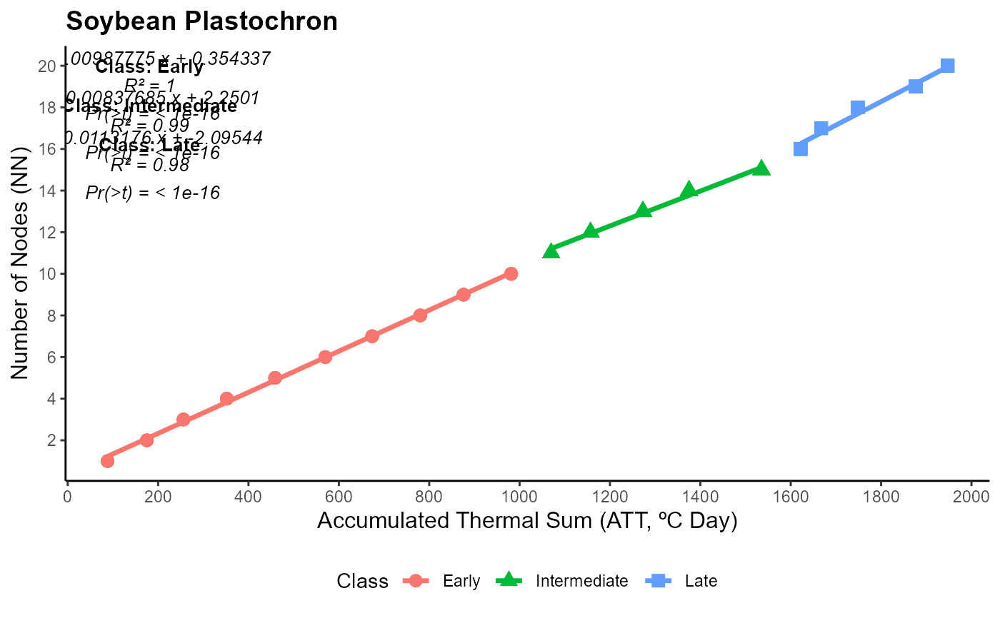

Estimation of soybean plastochron using average air temperature and number of nodes
plastocrono(GEN, TMED, STAD, NN, habit = "ind", plot = FALSE)The column with the genotype name.
The column with the average air temperature values.
The column with the phenological stages of soybean, as described by Fehr & Caviness (1977).
The column with the number of nodes measured in field.
Growth habit of the genotype (default = "ind"). Use "ind" for indeterminate and "det" for determinate.
Logical argument. Returns a graph with the linear models if TRUE.
If the growth habit is determined, the function returns a linear model for the V1 to R1 stages (Early Pheno) and a linear model for the R1 to R5 stages (Late Pheno). If the growth habit is indeterminate, returns three linear models: Early Pheno (V1 to R1), Intermediate Pheno (R1 to R3) and Late Pheno (R3 to R5).
Porta, F. S. D., Streck, N. A., Alberto, C. M., da Silva, M. R., & Tura, E. F. (2024). Improving understanding of the plastochron of determinate and indeterminate soybean cultivars. Revista Brasileira de Engenharia Agrícola e Ambiental, 28(10), e278299. https://doi.org/10.1590/1807-1929/agriambi.v28n10e278299
Fehr, W. R., & Caviness, C. E. (1977). Stages of soybean development. Iowa State University of Science and Technology Special Report, 80, 1-11.
# \donttest{
library(EstimateBreed)
data("pheno")
with(pheno, plastocrono(GEN,TMED,EST,NN,habito="ind",plot=T))
#> Loading required package: hrbrthemes
#> Loading required package: broom
#> Loading required package: purrr
#>
#> Attaching package: 'purrr'
#> The following object is masked from 'package:jsonlite':
#>
#> flatten
#> Loading required package: ggrepel
#> Loading required package: grid
#> -------------------------------
#> Early Soybean Pheno (V1 to R1)
#>
#> Call:
#> lm(formula = NN ~ STA, data = cur_data())
#>
#> Residuals:
#> Min 1Q Median 3Q Max
#> -0.225357 -0.060461 -0.007911 0.112666 0.168499
#>
#> Coefficients:
#> Estimate Std. Error t value Pr(>|t|)
#> (Intercept) 3.543e-01 3.016e-02 11.75 <2e-16 ***
#> STA 9.878e-03 4.875e-05 202.63 <2e-16 ***
#> ---
#> Signif. codes: 0 '***' 0.001 '**' 0.01 '*' 0.05 '.' 0.1 ' ' 1
#>
#> Residual standard error: 0.1072 on 56 degrees of freedom
#> Multiple R-squared: 0.9986, Adjusted R-squared: 0.9986
#> F-statistic: 4.106e+04 on 1 and 56 DF, p-value: < 2.2e-16
#>
#> -------------------------------
#> Intermediate Soybean Pheno (R1 to R3)
#>
#> Call:
#> lm(formula = NN ~ STA, data = cur_data())
#>
#> Residuals:
#> Min 1Q Median 3Q Max
#> -0.21208 -0.11184 0.05914 0.08650 0.23156
#>
#> Coefficients:
#> Estimate Std. Error t value Pr(>|t|)
#> (Intercept) 2.2500997 0.2069943 10.87 2.83e-12 ***
#> STA 0.0083769 0.0001545 54.22 < 2e-16 ***
#> ---
#> Signif. codes: 0 '***' 0.001 '**' 0.01 '*' 0.05 '.' 0.1 ' ' 1
#>
#> Residual standard error: 0.1535 on 32 degrees of freedom
#> Multiple R-squared: 0.9892, Adjusted R-squared: 0.9889
#> F-statistic: 2940 on 1 and 32 DF, p-value: < 2.2e-16
#>
#> -------------------------------
#> Late Soybean Pheno (R3 to R5)
#>
#> Call:
#> lm(formula = NN ~ STA, data = cur_data())
#>
#> Residuals:
#> Min 1Q Median 3Q Max
#> -0.26122 -0.14393 0.05932 0.22552 0.30325
#>
#> Coefficients:
#> Estimate Std. Error t value Pr(>|t|)
#> (Intercept) -2.0954373 0.4664002 -4.493 5.64e-05 ***
#> STA 0.0113176 0.0002576 43.932 < 2e-16 ***
#> ---
#> Signif. codes: 0 '***' 0.001 '**' 0.01 '*' 0.05 '.' 0.1 ' ' 1
#>
#> Residual standard error: 0.2037 on 41 degrees of freedom
#> Multiple R-squared: 0.9792, Adjusted R-squared: 0.9787
#> F-statistic: 1930 on 1 and 41 DF, p-value: < 2.2e-16
#>

# }